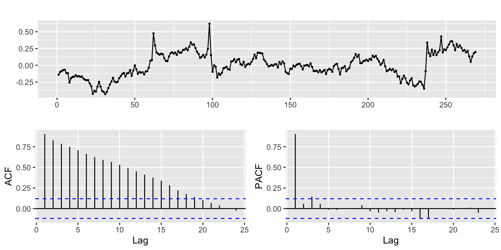
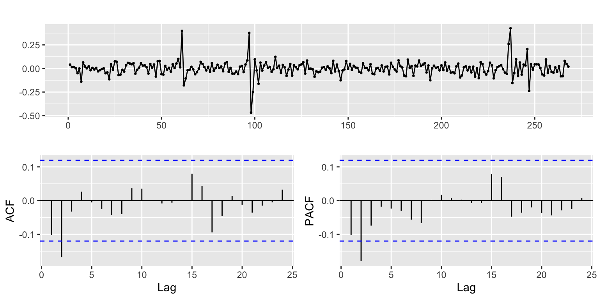
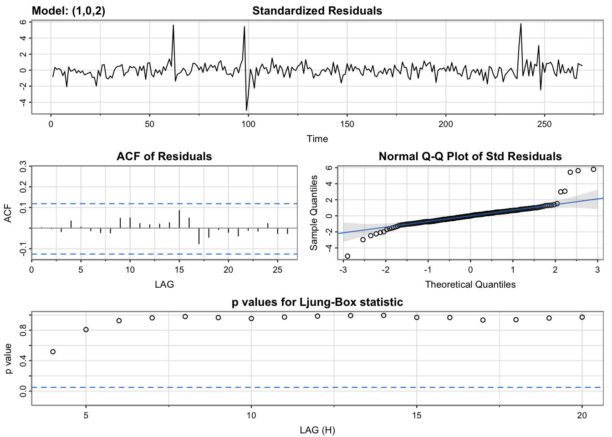
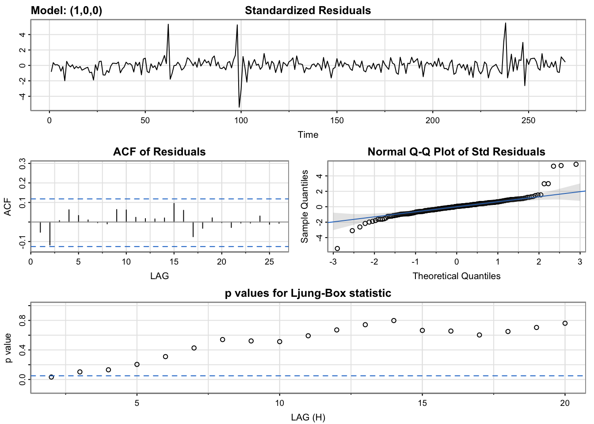
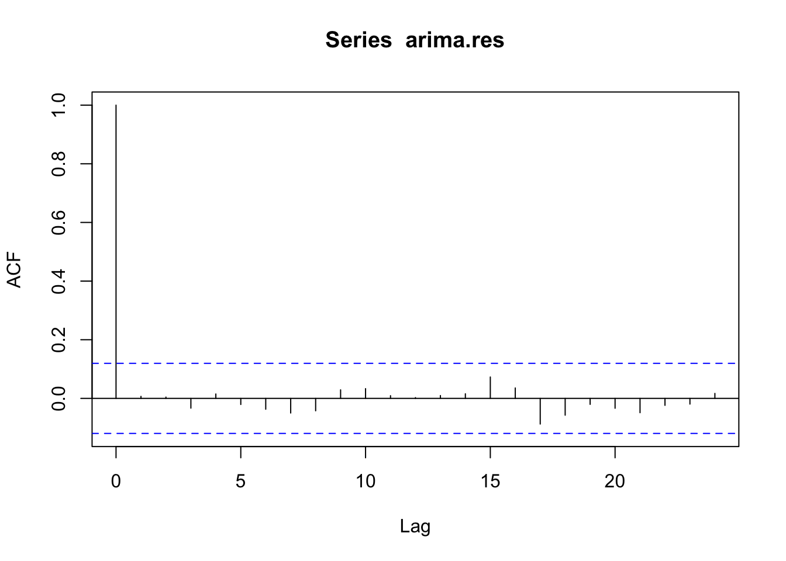
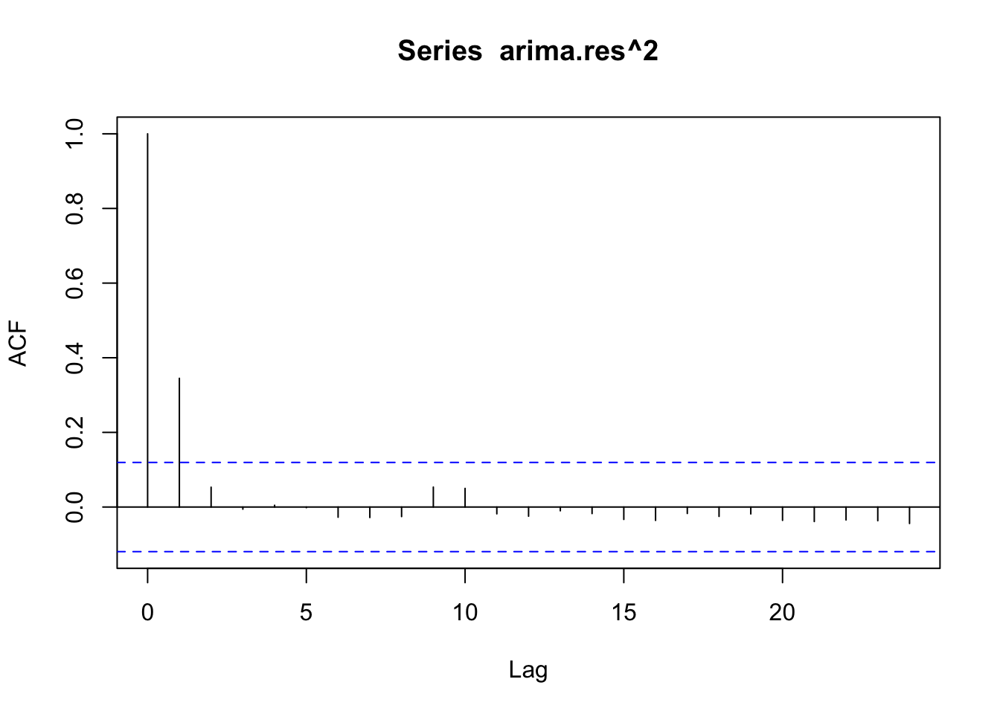
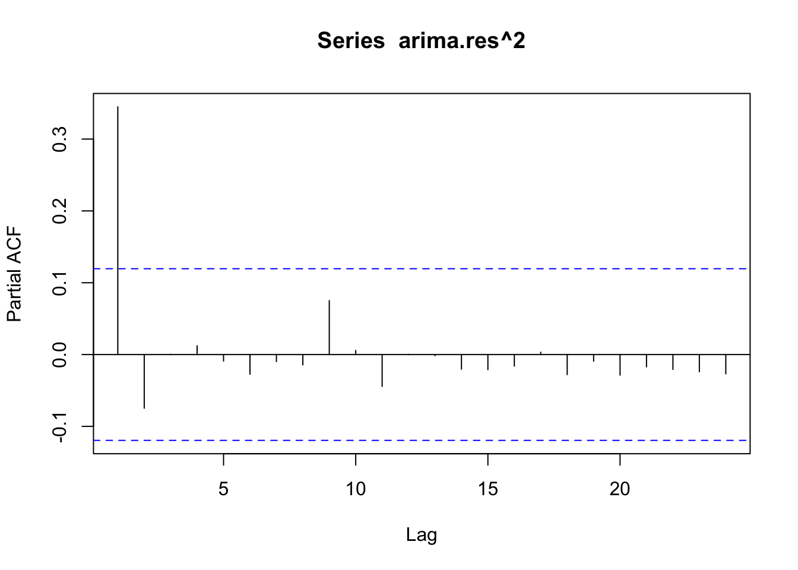
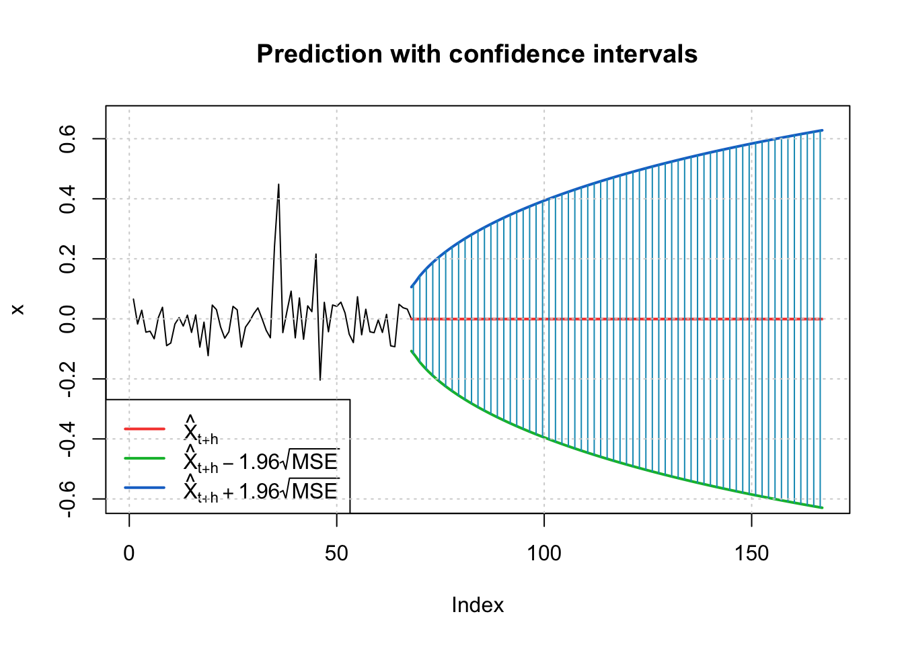

Healthcare Index
Data Cleaning and Merge Datasets
We created a new dataset that contains the information for the Healthcare Index, Oil Production and Oil price. Index and Production variables have been transformed in order to have a closer scale to the Price variable.
{r}
# Read csv
df_healthcare_index <- read.csv('../data/viz_healthcare_index.csv')
# Change data type
df_healthcare_index$date <- as.Date(df_healthcare_index$date)
# Create a sequence of dates from start_date to end_date
start_date <- as.Date(min(df_healthcare_index$date))
end_date <- as.Date(max(df_healthcare_index$date))
# Create date sequence
date_range <- seq(start_date, end_date, by = "1 day")
# Create a dataset with the date range
date_dataset <- data.frame(Date = date_range)
# Merge dataframes
df_healthcare_index <- merge(df_healthcare_index, date_dataset, by.x = "date", by.y = "Date", all = TRUE)
# Check for missing values
# is.na(df_oil_price$adjusted)
# Extract rows with missing values
df_na_rows <- df_healthcare_index[which(rowSums(is.na(df_healthcare_index)) > 0),]
# Extract columns with missing values
df_na_cols <- df_healthcare_index[, which(colSums(is.na(df_healthcare_index)) > 0)]
# Modify data
imputed_time_series <- na_ma(df_healthcare_index, k = 4, weighting = "exponential")
# Add modified data
df_healthcare_index <- data.frame(imputed_time_series)
# Change data type
df_healthcare_index$date <- as.Date(df_healthcare_index$date,format = "%m/%d/%y")
# Create Date separte terms columns
df_healthcare_index_monthly <- df_healthcare_index %>%
mutate(Year = lubridate::year(date),
Month = lubridate::month(date),
Day = lubridate::day(date))
# Group by Year Month and get the maximum day
df_healthcare_index_monthly <- df_healthcare_index_monthly %>%
group_by(Year, Month) %>%
summarize(Max_Day = max(Day))
# Create Date
df_healthcare_index_monthly <- df_healthcare_index_monthly %>%
mutate(date = make_date(Year, Month, Max_Day))
# Merge datasets
df_healthcare_index_monthly <- merge(df_healthcare_index_monthly, df_healthcare_index, by = "date", all.x = TRUE)
# Keep relevant columns
df_healthcare_index_monthly <- df_healthcare_index_monthly %>% dplyr::select("date", "adjusted")
# Rename columns
names(df_healthcare_index_monthly) <- c('Date', 'Index')
# Save ts as a new file
write.csv(df_healthcare_index_monthly, '../data/df_healthcare_index_monthly.csv', row.names = FALSE)
# ---------------------------------------------------------------------------------------------------------------------------------
# Import dataset
df_healthcare_index_monthly <- as.data.frame(read_csv('../data/df_healthcare_index_monthly.csv'))
# Filter information
df_healthcare_index_monthly <- df_healthcare_index_monthly %>% filter(year(Date) >= 2000 & year(Date) <= 2022)
# Create Date
df_healthcare_index_monthly <- df_healthcare_index_monthly %>%
mutate(date2 = make_date(year(Date), month(Date), 01))
# Import dataset
df_oil_production <- as.data.frame(read_csv('../data/viz_us_oil_production.csv'))
# Filter information
df_oil_production <- df_oil_production %>% filter(year(Date) >= 2000 & year(Date) <= 2022)
# Create Date
df_oil_production <- df_oil_production %>%
mutate(date2 = make_date(year(Date), month(Date), 01))
# Import dataset
df_oil_price <- as.data.frame(read_csv('../data/df_oil_price_monthly.csv'))
# Create Date
df_oil_price <- df_oil_price %>%
mutate(date2 = make_date(year(date), month(date), 01))
df_healthcare_index_monthly$date2 <- as.Date(df_healthcare_index_monthly$date2)
df_oil_production$date2 <- as.Date(df_oil_production$date2)
df_oil_price$date2 <- as.Date(df_oil_price$date2)
# List of minimum dates
dates <- c(min(df_healthcare_index_monthly$date2), min(df_oil_production$date2),min(df_oil_price$date2))
min_date <- max(dates)
# Filter starting date
df_healthcare_index_monthly <- df_healthcare_index_monthly %>% filter(date2 >= min_date)
# Filter starting date
df_oil_production <- df_oil_production %>% filter(date2 >= min_date)
# Filter starting date
df_oil_price <- df_oil_price %>% filter(date2 >= min_date)
# Keep relevant columns
df_healthcare_index_monthly <- df_healthcare_index_monthly %>% dplyr::select('date2', 'Index')
# Convert to Log
df_healthcare_index_monthly$Index <- log(df_healthcare_index_monthly$Index)
# Keep relevant columns
df_oil_production <- df_oil_production %>% dplyr::select('date2', 'Production')
# Convert to Log
df_oil_production$Production <- log(df_oil_production$Production)
# Keep relevant columns
df_oil_price <- df_oil_price %>% dplyr::select('date2', 'adjusted')
# List of dataframes
df_list <- list(df_healthcare_index_monthly, df_oil_production, df_oil_price)
# Combine datasets
dd <- merge_dataframes(df_list)
# Rename columns
names(dd) <- c('DATE', 'Index', 'Production', 'Price')
# Order by Date sort ascending
dd <- dd %>% dplyr::arrange(DATE)
# # Create the time series object
# dd.ts <- ts(dd,star=decimal_date(min_date),frequency = 12)
# Show table
knitr::kable(head(dd))| DATE | Index | Production | Price |
|---|---|---|---|
| 2000-08-01 | 3.874331 | 8.663715 | 1.0327613 |
| 2000-09-01 | 3.904424 | 8.658345 | 0.9740746 |
| 2000-10-01 | 3.935549 | 8.667164 | 1.0199688 |
| 2000-11-01 | 3.959132 | 8.671287 | 1.0546022 |
| 2000-12-01 | 3.969801 | 8.675051 | 0.8429909 |
| 2001-01-01 | 3.901347 | 8.665441 | 0.8954759 |
Plot
In the plot below we can observe the time series for the variables Index, Production and Price from 2020 to 2022.
{r}
plot <- ggplot(dd, aes(x = DATE)) +
geom_line(aes(y = Index, color = "Index"), alpha = 0.7) +
geom_line(aes(y = Production, color = "Production"), alpha = 0.7) +
geom_line(aes(y = Price, color = "Price"), alpha = 0.7) +
labs(title = "Healthcare Index ~ Oil Price + Oil Production",
x = "Date",
y = "Value",
color = "Variables") + # Set legend title
scale_color_manual(values = c(Index = "red", Production = "blue", Price = "green")) +
theme_minimal()
plot %>% ggplotly()Linear Models
In FIT 1 we can observe the first linear model where the Index is the predictor variable and Oil Production and Oil Price are the independent variables. The variable Oil Price has a p-value higher than the significance level of 0.05, so it is not significant.
In FIT 2 we can see the second linear model where the Index is the predictor variable and Oil Production is the independent variable. The model has good R-squared and RMSE values.
{r}
fit_1 <- lm(Index ~ ., data = dd)
summary(fit_1)
Call:
lm(formula = Index ~ ., data = dd)
Residuals:
Min 1Q Median 3Q Max
-0.31006 -0.08638 -0.00920 0.09889 0.32938
Coefficients:
Estimate Std. Error t value Pr(>|t|)
(Intercept) -7.657e+00 4.832e-01 -15.846 <2e-16 ***
DATE 1.186e-04 9.838e-06 12.061 <2e-16 ***
Production 1.157e+00 6.800e-02 17.020 <2e-16 ***
Price 8.583e-04 1.334e-02 0.064 0.949
---
Signif. codes: 0 '***' 0.001 '**' 0.01 '*' 0.05 '.' 0.1 ' ' 1
Residual standard error: 0.1269 on 265 degrees of freedom
Multiple R-squared: 0.9624, Adjusted R-squared: 0.962
F-statistic: 2262 on 3 and 265 DF, p-value: < 2.2e-16{r}
fit_2 <- lm(Index ~ Production, data = dd)
summary(fit_2)
Call:
lm(formula = Index ~ Production, data = dd)
Residuals:
Min 1Q Median 3Q Max
-0.42988 -0.11657 -0.00471 0.14154 0.62106
Coefficients:
Estimate Std. Error t value Pr(>|t|)
(Intercept) -12.66791 0.30355 -41.73 <2e-16 ***
Production 1.92556 0.03416 56.37 <2e-16 ***
---
Signif. codes: 0 '***' 0.001 '**' 0.01 '*' 0.05 '.' 0.1 ' ' 1
Residual standard error: 0.1815 on 267 degrees of freedom
Multiple R-squared: 0.9225, Adjusted R-squared: 0.9222
F-statistic: 3177 on 1 and 267 DF, p-value: < 2.2e-16R^2: 0.9224835 RMSE: 0.180819Stationarity
The ACF plot shows high autocorrelation in the lags, so the time series is not stationary. Evaluating the results of the Augmented Dickey-Fuller test, the p-value is higher than the significance level of 0.05. Therefore, we cannot reject the null hypothesis that the time series is stationary.
Time Series, ACF Plot and PACF Plot
{r}
lm.residuals <- residuals(fit_2)
lm.residuals %>% ggtsdisplay()
Augmented Dickey-Fuller Test
{r}
adf_test <- adf.test(lm.residuals)
print(adf_test)
Augmented Dickey-Fuller Test
data: lm.residuals
Dickey-Fuller = -2.6337, Lag order = 6, p-value = 0.309
alternative hypothesis: stationaryDifferencing
We apply the first difference to the residuals of the linear model to obtain a stationary time series. We can observe the volatility of the residuals and two main volatility clusters in the data points near 100 and near 250.
In the acf plot, we can observe that the differenced residuals look stationary.
{r}
lm.residuals %>% diff() %>% ggtsdisplay()
Model Selection
Based on the ACF and PACF plot for the first difference on residuals, we define:
\(p = 2\)
\(d = 1\)
\(q = 2\)
Next we will run the model diagnostics on the models that have the minimum AIC, minimum BIC and the auto.arima() results.
Model Parameters
{r}
xt <- lm.residuals
p_value <- 2
d_value <- 1
q_value <- 2
i <- 1
temp <- data.frame()
rows <- (p_value+1)*(d_value+1)*(q_value+1)
ls <- matrix(rep(NA,6*rows),nrow=rows)
for (p in 0:p_value+1)
{
for(q in 0:q_value+1)
{
for(d in 0:d_value)
{
if(p-1+d+q-1<=8) #usual threshold
{
model<- Arima(xt,order=c(p-1,d,q-1),include.drift=TRUE)
ls[i,]= c(p-1,d,q-1,model$aic,model$bic,model$aicc)
i=i+1
#print(i)
}
}
}
}
temp <- as.data.frame(ls)
temp <- na.omit(temp)
names(temp) <- c("p","d","q","AIC","BIC","AICc")
#temp
knitr::kable(temp)| p | d | q | AIC | BIC | AICc |
|---|---|---|---|---|---|
| 0 | 0 | 0 | -181.9296 | -171.1454 | -181.8390 |
| 0 | 1 | 0 | -605.0585 | -597.8765 | -605.0132 |
| 0 | 0 | 1 | -398.3793 | -384.0005 | -398.2278 |
| 0 | 1 | 1 | -607.4171 | -596.6441 | -607.3261 |
| 0 | 0 | 2 | -488.8055 | -470.8320 | -488.5774 |
| 0 | 1 | 2 | -614.1934 | -599.8294 | -614.0413 |
| 1 | 0 | 0 | -616.8152 | -602.4364 | -616.6637 |
| 1 | 1 | 0 | -605.8417 | -595.0688 | -605.7508 |
| 1 | 0 | 1 | -615.9225 | -597.9489 | -615.6943 |
| 1 | 1 | 1 | -612.7719 | -598.4079 | -612.6198 |
| 1 | 0 | 2 | -619.1369 | -597.5686 | -618.8162 |
| 1 | 1 | 2 | -612.6320 | -594.6771 | -612.4030 |
| 2 | 0 | 0 | -615.5707 | -597.5971 | -615.3425 |
| 2 | 1 | 0 | -612.6000 | -598.2361 | -612.4479 |
| 2 | 0 | 1 | -616.8600 | -595.2918 | -616.5394 |
| 2 | 1 | 1 | -612.4744 | -594.5194 | -612.2454 |
| 2 | 0 | 2 | -617.1683 | -592.0053 | -616.7391 |
| 2 | 1 | 2 | -610.6323 | -589.0864 | -610.3105 |
Model Summary
{r}
temp[which.min(temp$AIC),] p d q AIC BIC AICc
11 1 0 2 -619.1369 -597.5686 -618.8162{r}
temp[which.min(temp$BIC),] p d q AIC BIC AICc
7 1 0 0 -616.8152 -602.4364 -616.6637{r}
temp[which.min(temp$AICc),] p d q AIC BIC AICc
11 1 0 2 -619.1369 -597.5686 -618.8162auto.arima()
{r}
# Assign the exogenous variable
fit_auto_arima <- auto.arima(xt)
summary(fit_auto_arima)Series: xt
ARIMA(0,1,2)
Coefficients:
ma1 ma2
-0.1443 -0.1808
s.e. 0.0599 0.0601
sigma^2 = 0.005789: log likelihood = 311.03
AIC=-616.06 AICc=-615.97 BIC=-605.29
Training set error measures:
ME RMSE MAE MPE MAPE MASE
Training set 0.001749108 0.07565713 0.04849242 -92.46969 165.3897 0.982097
ACF1
Training set 0.006260783Model Diagnostics
Comparing the results of the model diagnostics, we can observe that the ARIMA(0, 1, 2) model is the best. The lag values in the ACF plot are within the confidence bands, so the residuals are stationary. The standard residuals plotted in the Normal Q-Q plot show the similarity to normality. The p-values for the Ljung-Box statistic confirm that the residuals are stationary.
{r}
AIC <- temp[which.min(temp$AIC),]
p1 <- AIC$p
d1 <- AIC$d
q1 <- AIC$q
model_output <- capture.output(sarima(xt, p1, d1, q1))
{r}
BIC <- temp[which.min(temp$BIC),]
p2 <- BIC$p
d2 <- BIC$d
q2 <- BIC$q
model_output <- capture.output(sarima(xt, p2, d2, q2))
{r}
p3 <- 0
d3 <- 1
q3 <- 2
model_output <- capture.output(sarima(xt, p3, d3, q3))Residuals
We plot the residuals and the residuals squared of the arima model using the ACF and PACF plot to determine the parameters for the GARCH model.
The values that will be used to assess the model are the following:
\(p = 2\)
\(q = 2\)
Residuals ACF
{r}
arima_model <- Arima(xt,order=c(p3, d3, q3),include.drift = TRUE)
arima.res <- residuals(arima_model)
acf(arima.res)
Residuals^2 ACF
{r}
acf(arima.res^2)
Residuals^2 PACF
{r}
pacf(arima.res^2)
GARCH Model
After running the GARCH models possibilities we observe that the model with the lowest AIC is GARCH(2, 1). The summary of the model shows that the beta1 component is not significant, therefore we decide to remove that component and test the GARCH(2, 0) model. For the second model, all the components are significant and the resulting AIC is lower compared to the AIC value of the GARCH(2, 1) model.
{r}
model <- list() ## set counter
cc <- 1
for (p in 1:2) {
for (q in 1:2) {
model[[cc]] <- garch(arima.res,order=c(q,p),trace=F)
cc <- cc + 1
}
}
GARCH_AIC <- sapply(model, AIC)
model[[which(GARCH_AIC == min(GARCH_AIC))]]
Call:
garch(x = arima.res, order = c(q, p), trace = F)
Coefficient(s):
a0 a1 a2 b1
0.001584 0.615018 0.352375 0.054949 {r}
summary(garchFit(~garch(2,1), arima.res, trace = F))
Title:
GARCH Modelling
Call:
garchFit(formula = ~garch(2, 1), data = arima.res, trace = F)
Mean and Variance Equation:
data ~ garch(2, 1)
<environment: 0x1468f8b70>
[data = arima.res]
Conditional Distribution:
norm
Coefficient(s):
mu omega alpha1 alpha2 beta1
-0.00067147 0.00159063 0.60321079 0.34242147 0.05552829
Std. Errors:
based on Hessian
Error Analysis:
Estimate Std. Error t value Pr(>|t|)
mu -0.0006715 0.0030947 -0.217 0.828229
omega 0.0015906 0.0004020 3.957 7.59e-05 ***
alpha1 0.6032108 0.1614972 3.735 0.000188 ***
alpha2 0.3424215 0.1663042 2.059 0.039494 *
beta1 0.0555283 0.0804259 0.690 0.489925
---
Signif. codes: 0 '***' 0.001 '**' 0.01 '*' 0.05 '.' 0.1 ' ' 1
Log Likelihood:
355.6375 normalized: 1.322073
Description:
Fri Nov 24 21:03:47 2023 by user:
Standardised Residuals Tests:
Statistic p-Value
Jarque-Bera Test R Chi^2 299.9580955 0.000000e+00
Shapiro-Wilk Test R W 0.9299812 5.822042e-10
Ljung-Box Test R Q(10) 13.1885075 2.133223e-01
Ljung-Box Test R Q(15) 20.7110813 1.463171e-01
Ljung-Box Test R Q(20) 25.7487013 1.742728e-01
Ljung-Box Test R^2 Q(10) 4.2661075 9.345449e-01
Ljung-Box Test R^2 Q(15) 6.5497598 9.689622e-01
Ljung-Box Test R^2 Q(20) 7.8949092 9.925405e-01
LM Arch Test R TR^2 4.1707538 9.801542e-01
Information Criterion Statistics:
AIC BIC SIC HQIC
-2.606971 -2.540154 -2.607645 -2.580137 {r}
summary(garchFit(~garch(2,0), arima.res, trace = F))
Title:
GARCH Modelling
Call:
garchFit(formula = ~garch(2, 0), data = arima.res, trace = F)
Mean and Variance Equation:
data ~ garch(2, 0)
<environment: 0x144eacc38>
[data = arima.res]
Conditional Distribution:
norm
Coefficient(s):
mu omega alpha1 alpha2
-0.00067147 0.00175460 0.62633625 0.36708371
Std. Errors:
based on Hessian
Error Analysis:
Estimate Std. Error t value Pr(>|t|)
mu -0.0006715 0.0030949 -0.217 0.828242
omega 0.0017546 0.0003995 4.392 1.12e-05 ***
alpha1 0.6263362 0.1649098 3.798 0.000146 ***
alpha2 0.3670837 0.1510851 2.430 0.015113 *
---
Signif. codes: 0 '***' 0.001 '**' 0.01 '*' 0.05 '.' 0.1 ' ' 1
Log Likelihood:
355.1695 normalized: 1.320333
Description:
Fri Nov 24 21:03:47 2023 by user:
Standardised Residuals Tests:
Statistic p-Value
Jarque-Bera Test R Chi^2 292.1773247 0.000000e+00
Shapiro-Wilk Test R W 0.9317016 8.352486e-10
Ljung-Box Test R Q(10) 12.9777373 2.249192e-01
Ljung-Box Test R Q(15) 20.1338720 1.668571e-01
Ljung-Box Test R Q(20) 25.3332902 1.889764e-01
Ljung-Box Test R^2 Q(10) 3.7881051 9.564000e-01
Ljung-Box Test R^2 Q(15) 6.0161276 9.794756e-01
Ljung-Box Test R^2 Q(20) 7.4781188 9.947960e-01
LM Arch Test R TR^2 3.7655229 9.873054e-01
Information Criterion Statistics:
AIC BIC SIC HQIC
-2.610926 -2.557473 -2.611360 -2.589459 Model Equation
\(Y_{t} = \mu - 0.00067 + \omega \times 0.00175 + \alpha_1 \times \varepsilon_{t-1}^2 + \alpha_2 \times \varepsilon_{t-2}^2 + \varepsilon_t\)
\(\mu - 0.00067 + \omega \times 0.00175 + \alpha_1 \times 0.62634 + \alpha_2 \times 0.36708\)
Forecast Plot
Below we can observe the Forcast Plot with the predictions from the ARIMA(0, 1, 2) + GARCH(2, 0) model.
{r}
final.fit <- garchFit(~garch(2,0), arima.res, trace = F)
plot <- predict(final.fit, n.ahead = 100, plot=TRUE)